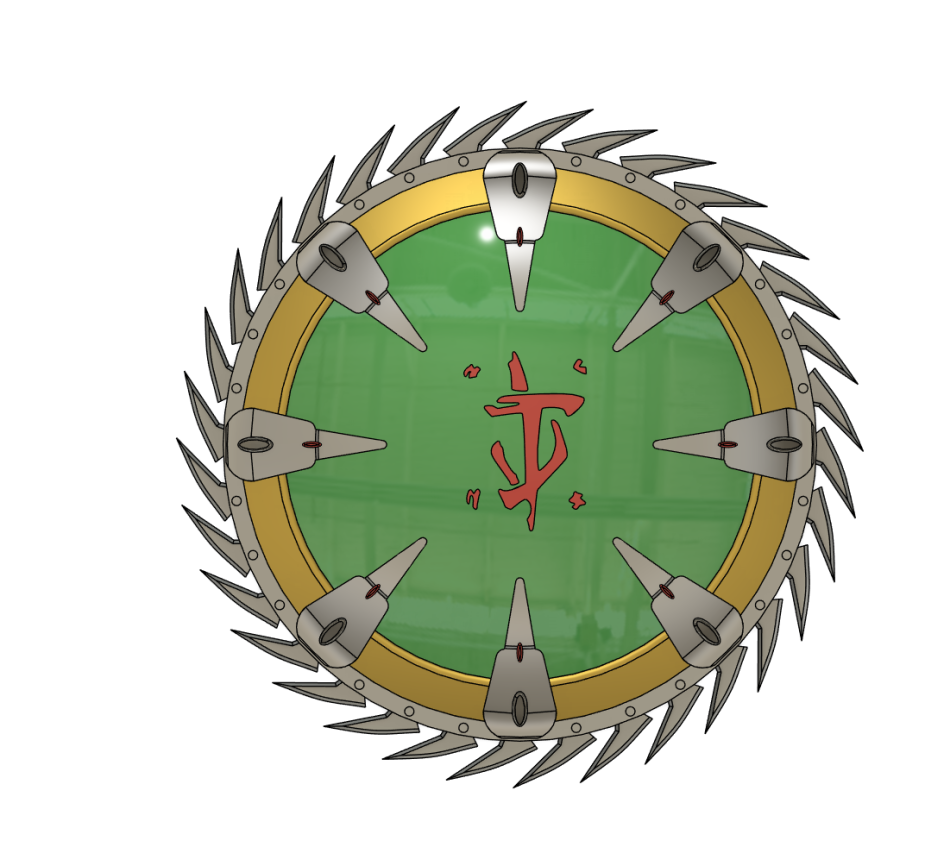
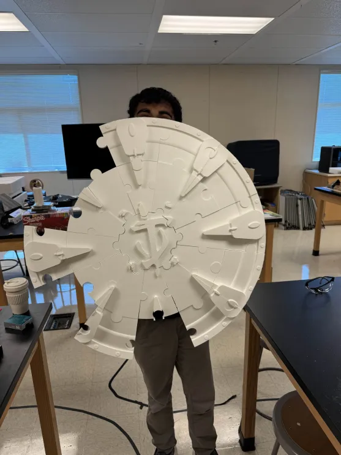

Project 1: Space Shooter Game (Python Turtle)
A top-down space shooter game built using Python's Turtle module. Players control a spaceship, dodging enemy bullets and shooting to defeat waves of enemies, including a challenging boss fight. The game features a scoring system and responsive controls.
Project 2: Shield Saw Engineering Project (Doom: The Dark Ages)
An engineering project to recreate the Shield Saw weapon from Doom: The Dark Ages. This functional prototype was designed and built using 3D modeling and mechanical components, showcasing skills in engineering design and fabrication.
 